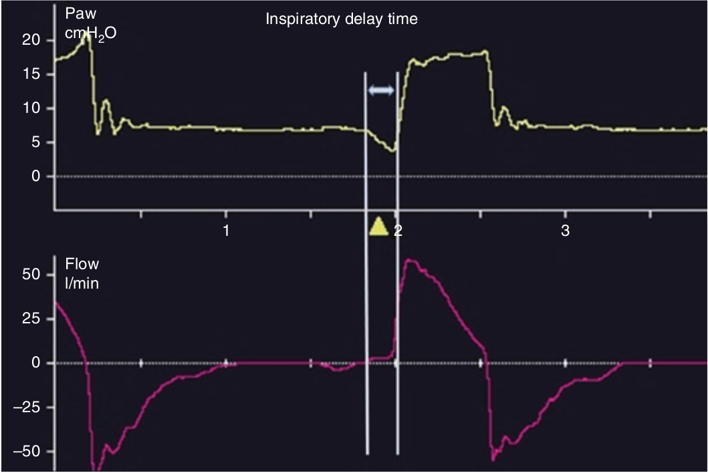

مدت تاخیر دمی فاصله زمانی بین تلاش اولیه بیمار و لحظه بازگشت فشار به حد نرمال می باشد که مجموع زمان ترایگر دمی و زمان لازم برای بازگشت فشار به حد نرمال است (فاز بعد از ترایگر). زمان تاخیر دمی به این عوامل بستگی دارد: تنظیم فشار دمی، زمان صعود فشار (rise time)، و کیفیت سیستم پنوماتیک ونتیلاتور.

زمان تاخیر دمی به کدام عامل زیر بستگی ندارد؟
۱ - تنظیم حساسیت ترایگر دمی
۲ - تنظیم حساسیت ترایگر بازدمی
۳ - وجود autoPEEP
۴ - تنظیم زمان صعود فشار
۵ - سیستم پنوماتیک ونتیلاتور